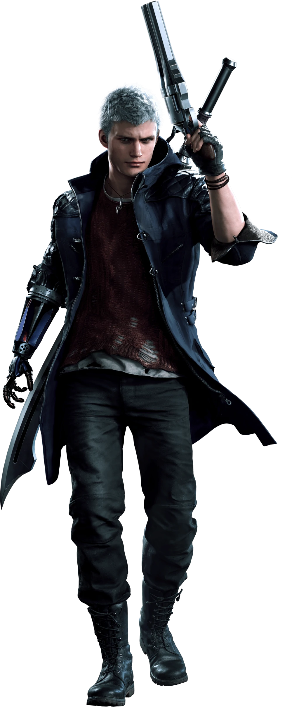

ABOUT
Legendary DMC action returns, made all the more stylish by the power modern gaming has to offer.
The Devil May Cry series boasts over 26 million sales worldwide. The first game in this popular series to make its debut in the current generation, bringing stylish mayhem against fiendish foes at the hands of Devil Hunters with demon blood in their veins.
STORY
Several years after the Order of the Sword incident... An unusual phenomenon suddenly appears in Red Grave City. A gigantic tree pierces through the surface in the middle of town, attacking with roots that drain the poor citizens of their blood. Young Devil Hunter Nero races into Red Grave aboard the mobile Devil May Cry vehicle with his partner Nico, a self-styled "artisan of arms" who provides Nero with his new weapons. Nero seeks to recover many things in Red Grave: Lost pride...stolen power...and a man left behind. Brandishing his beloved Red Queen sword and custom Blue Rose revolver, Nero plunges into Red Grave, routing the demon hordes as he makes for the menacing phenomenon in the city center. All the while, a new power crackles through his right arm... The all-new anti-demon arm known as the Devil Breaker. "Not bad...let's see what this can do!
STYLISH ACTION
The fast-paced action you love, the devilish combat you crave! Stylish action makes a triumphant return in the ramped-up sword-and-gun gameplay the DMC series is known for. Climb the Stylish Ranks! Chain together stylish combos in battle to trigger a Stylish Rank on the right side of the screen, which rises as you continue your artistic onslaught. Shooting for higher Stylish Ranks has all sorts of benefits, even pumping up the battle music at higher ranks. Nothing beats the feeling of finishing off a battle at SSS Rank! Defeating foes with style nets you more Red Orbs, the mainstay DMC currency for powering up your character. Magical red stones of crystallized demon blood. Exchange these for new weapons and skills. Make the demons' power your own Use Red Orbs to learn new skills. You can even refill your Devil Breakers or stock up on items.
CHARACTERS:
Nero

The young Devil Hunter operating out of the mobile Devil May Cry. Having lost his demonic arm (the Devil Bringer) before the events of the game, he stands against the invading demonic forces with a new power.
Dante
The proprietor of Devil May Cry, and a Devil Hunter of legendary proportions. Dante is a half-human, half-demon hybrid, born to a human woman Eva and the demon who saved the human world, Sparda. He overcame battle after arduous battle in his past, and currently serves as a barrier to any attempt by demons to invade his world.
Vergil

Vergil is the older twin brother of Dante and one of the main antagonists of the Devil May Cry franchise. Stoic and reserved, Vergil displays a willingness to do anything in his quest to obtain the power of his father, Sparda.